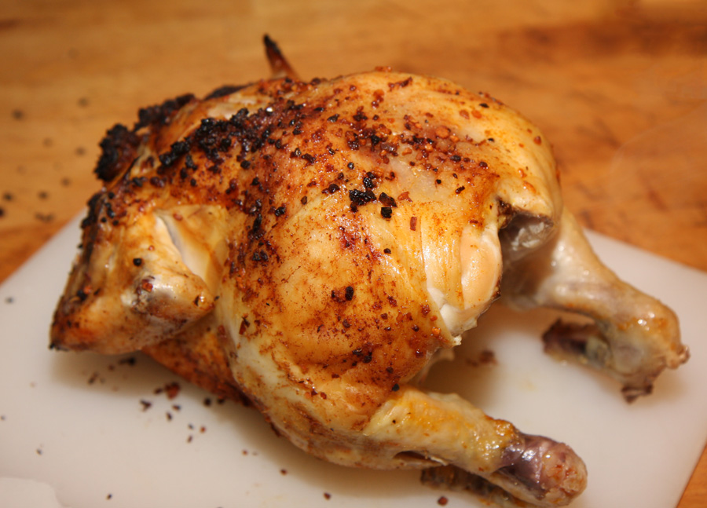

Home
Chicken Recipe

Ingredients
- 4 boneless, skinless chicken breasts
- 2 tablespoons olive oil
- 1 teaspoon salt
- 1/2 teaspoon black pepper
- 1 teaspoon garlic powder
- 1 teaspoon paprika
- 1/2 teaspoon dried thyme
- 1/2 teaspoon dried rosemary
- 1/2 teaspoon dried oregano
Instructions
- Preheat the oven to 400°F (200°C).
- In a small bowl, mix together the olive oil, salt, black pepper, garlic powder, paprika, thyme, rosemary, and oregano.
- Rub the spice mixture evenly over both sides of the chicken breasts.
- Place the chicken breasts on a baking sheet lined with parchment paper.
- Bake in the preheated oven for 20-25 minutes, or until the chicken is cooked through and reaches an internal temperature of 165°F (74°C).
- Remove from the oven and let rest for 5 minutes before serving.